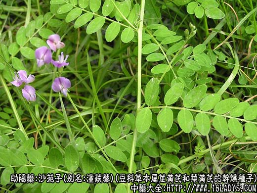
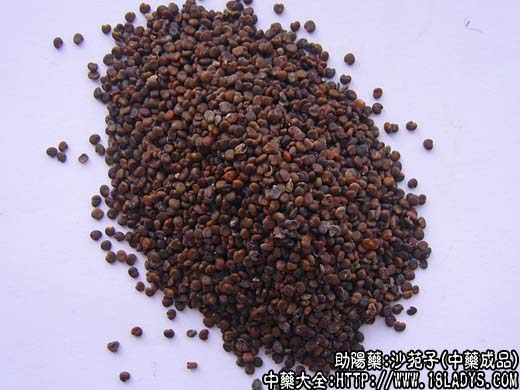
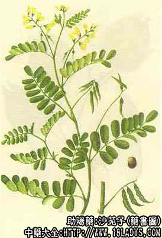

沙苑子为少常用中药。始载《图经本草》，列于蒺藜子项下，原名“白蒺藜”。
别名：潼蒺藜、沙苑蒺藜。
来源：为豆科多年生草本植物扁茎黄芪和华黄芪的成熟干燥种子。野生或栽培。
产地：主产于陕西、河北、山西、内蒙古、甘肃、辽宁等地。
性状鉴别：扁茎黄芪的种子呈圆肾形，长2～2.5毫米。表面灰棕色或灰褐色，光滑。一侧中部微凹入，是种脐的所在。质坚硬，不易破碎。气微，味淡有豆腥味。
华黄芪的种子呈肾形，长2～2.8毫米，宽1.8～2毫米，厚约1毫米。表面灰棕色或灰绿色，光滑。一侧中部凹入较深。其余与以上相同。
以上两种沙苑子，均以种子成熟饱满，个粒匀称者为佳。
功效与作用：含维生素A类物质、脂肪油、鞣质。
炮制：生用或盐水炒用。
性味：甘，温。
归经：入肝、肾经。
功能：补肝肾，固精，缩尿，明目。
主治：肝肾虚引起的腰膝酸痛，头晕眼花，遗精早泄，遗尿，尿频，带下，目暗不明等症。
临床应用：与菟丝子近似，除治遗精、早泄、神经衰弱等虚劳症外，主要用于治疗肝肾不足所致的视蒙（视力减退），一般配杞子、熟地；有阴虚者配女贞子、生地。治翳障（如早期老年性白内障）则配石菖蒲、夜明砂、女贞子等，方如补肾明目散。
附：与白蒺藜比较：白蒺藜善散风热，故由风热所致的头痛、外眼翳膜用之；潼蒺藜长于补肾，故与肾虚有关的腰痛、内眼翳膜用之。
用量：9～24g。
处方举例：补肾明目散：沙苑子，石菖蒲，女贞子，生地黄，菟丝子，夜明砂，各30g共为细末，每服12g，水煎服。
注：除上述两种沙苑子在全国大部分地区使用外，尚有个别地区以同科植物紫云英、猪屎豆等的种子作沙苑子使用。
紫云英种子：呈斜长方状肾形，体形较扁大。长2.5～3.5毫米，宽1.5～2毫米。表面暗黄绿色或暗棕黄色，光滑，一侧的凹入部分较深呈钩状。质坚硬，不易破碎。气微，味淡。性味辛平。功能祛风明目，解热利尿。治久病体虚，视力减退，淋病，疥癣疮疡等症。
猪尿豆种子：呈三角状肾形，较肥厚，长2.5～3.5毫米，宽2～2.5毫米。表面淡黄绿色，光滑。一侧微显凹入。在放大镜下观察有条状花纹。质坚硬，不易破碎。气微，味淡。功能补肝肾固精。